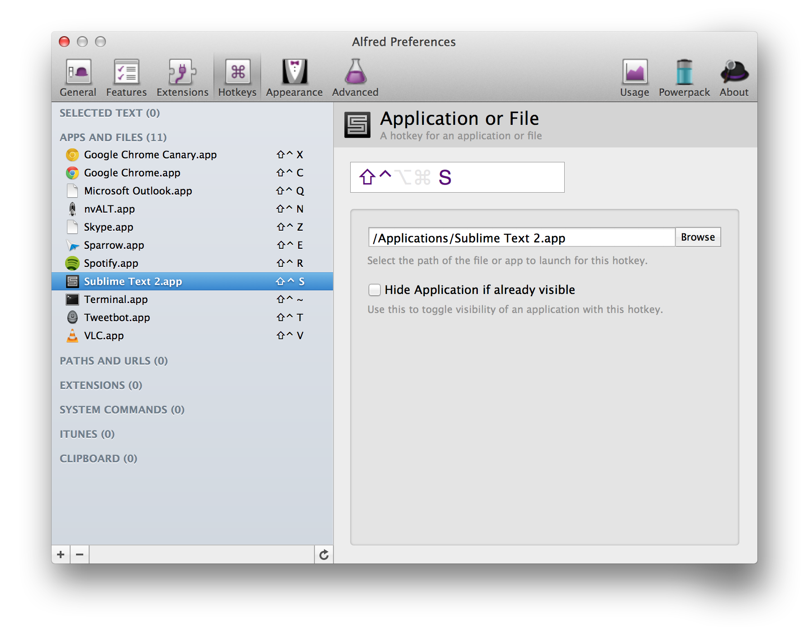

Frontend Tooling
(Why you should use Sublime Text 2)

by me, @victornguyen
Why is tooling important?
- It makes us faster
- It makes us less error-prone
- It makes our job more fun
What we'll cover
Sublime Text 2- LiveReload
- Adobe Shadow
PhantomJS(for testing)- Alfred
- Dropbox
Sublime Text 2
The spiritual successor to TextMate.
Why it's awesome
- Actively developed
- Great Plugin API
- Highly customisable
- Vibrant community
- Cross platform
Goto Anything
- Files
- Symbols
- Lines
- Commands
Multiple Selections
- Select similar
- Multiple cursors
- Column selection
Package Control
- Discover, install, upgrade, remove packages
- Auto-updates packages
- Easily enable/disable packages
Some Packages
- SublimeLinter
- TrailingSpaces
- DockBlockr
- Fetch
LiveReload

What does it do?
Monitors changes to files and automatically refreshes/updates the browser
- CSS changes are applied live, sans refresh
- Supports preprocessers (CoffeeScript, LESS, SASS...)
- Can use as filesystem watcher to run commands
- Works on iOS devices
Adobe Shadow
What does it do?
Pairs iOS and Android devices to a computer to enable synchronised browsing.
- Can pair multiple devices
- Enables remote inspection via weinre
- Makes your workflow feel like the future
PhantomJS
What is it?
PhantomJS is a headless WebKit with JavaScript API. It has fast and native support for various web standards: DOM handling, CSS selector, JSON, Canvas, and SVG.
What can you do with it?
Alfred
What does it do?
- Launches applications
- Quick calculations
- Custom web searches
- Run shell scripts
Global Hotkeys
Clipboard History
... is fucking awesome!
Create Project Structure
Demo
Dropbox
What do I use it for?
Syncing my dev environment across my work and home machines.
- Sublime Text 2 config
- Alfred settings
- Dotfiles
- 1Password database
- TextExpander snippets
Other stuff I use,
but I'm not going to talk about
- Chrome Developer Tools
- Charles (http monitor, web proxy)
- TextExpander (system-wide snippets)
- Divvy (window management)
- Grunt (build tool)
- Sip (sweet colour picker)